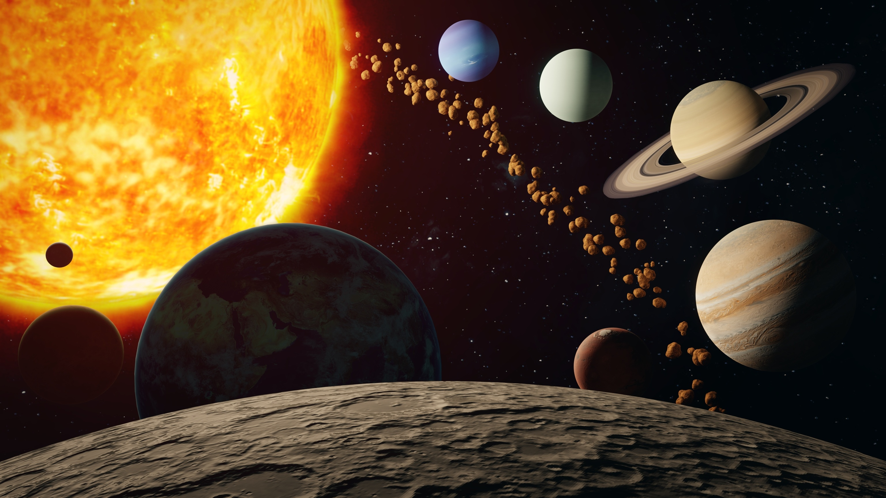
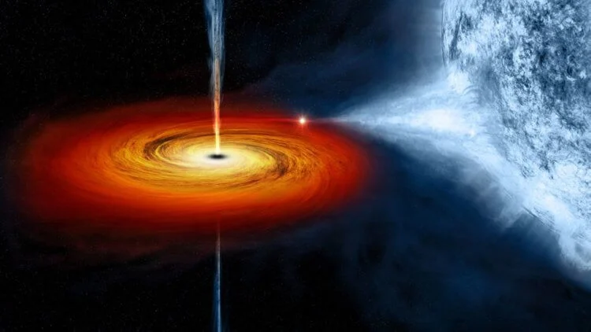

Космос...

Космос — это почти пустое пространство, которое окружает нашу планету.
Мы готовы ответить на самые популярные ваши вопросы: почему в космосе невесомость,
почему в космосе нельзя дышать, как космос возник или откуда появился.
А как насчет философских вопросов: откуда появился космос или есть ли у космоса начало и конец?
Как себя чувствуют космонавты на МКС и каким правилам должны придерживаться космонавты находясь
на орбите нашей планеты? Все ответы вы сможете найти у нас на сайте!
Сегодня изучением космоса занимаются такие компании, как NASA и SpaceX Элона Маска.
Например, SpaceX планирует отправить первую пилотируемую ракету к МКС уже в этом году,
а NASA собирается начать производство кислорода на Марсе. Согласитесь, это поразительно!
Как черная дыра создает звезды

Хаббл выявил сверхмассивную черную дыру, находящуюся в центре соседней карликовой галактики.
От нас она расположена на расстоянии порядка 30 млн световых лет. Это сравнительно немного по космическим меркам.
Поэтому телескоп получил как изображение, так и спектроскопические свидетельства того, что область образования
звезд связана с черной дырой. К слову, это далеко не самая близкая к нам черная дыра. Расстояние до ближайшей
черной дыры составляет 1000 световых лет.
Черная дыра извергает мощную струю ионизированного газа со скоростью более полутора миллионов километров в час.
Как было сказано выше, она растянулась на 500 световых лет. Однако “звездный питомник” возник не на конце струи,
а на расстоянии 230 световых лет от черной дыры. Благодаря газовым облакам, на которые наткнулась струя,
здесь возникли идеальные условия для возникновения звезд.
Как поясняют ученые, черные дыры образуют извергающиеся из них плазменные струи после того,
как всасывают материю из ближайших звезд и газовых облаков. Они движутся со скоростью, близкой к скорости света.
Когда газовые облака, в которую врезается плазменная струя, нагреваются до определенной температуры,
они становятся идеальным “питомником” для звезд.
По словам ученых, несколько миллионов лет назад струя врезалась в разогретое газовое облако и разлетелась.
Примерно так же, как мощная струя воды, которая ударяется о твердую поверхность. Скопления новых звезд возникает
перпендикулярно потоку. Таким образом можно проследить траекторию его распространения.
Однако не всегда подобные струи приводят к возникновению звезд. Иногда они нагревают газовые облака слишком сильно,
в результате чего последние теряют способность снова остывать. В таких условиях звезды не могут образовываться.
Как правило, такой “перегрев” газовых облаков возникает в крупных галактиках. Ранее даже считалось,
что потоки плазмы, наоборот, препятствуют возникновению звезд. К примеру, черная дыра в центре нашей галактики
никаких звезд не производит, и вообще делает с ними нечто странное.
Поэтому возникновение звезд из газовой струи стало для ученых большим сюрпризом. Но почему же она не
перегревает газовые облака? Как поясняют ученые, в черной дыре, которая была обнаружена в Henize 2-10,
потоки струи были более “мягкие” и менее интенсивные, что создало идеальные условия для звездообразования.